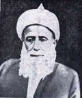

Alvarlý Hoca Muhammed Efendi (1868/9-1956)

Asýl ismi Muhammed Lütfi olmakla birlikte “Alvarlý Efe Hazretleri” lâkabýyla tanýnýp meþhur olmuþtur. Erzurum’da yetiþip büyüyen âlimlerden olup mutlâkiyet, meþrutiyet ve cumhuriyet dönemlerini yaþamýþtýr. Bitlis âlim ve þeyhlerinden Muhammed Küfrevî Hazretlerine baðlanmýþ ve bilâhare onun halifelerinden biri olarak irþat vazifesinde bulunmuþtur. Bediüzzaman Hazretleri talebelerinden Hulusi Beye yazdýðý mektuplarýndan birinde ismini zikretmiþ ve selâmlarýný iletmesini talebesinden istemiþtir. Doksan yýla yakýn bir ömür sürmüþ ve mesaisini insanlarýn kurtuluþuna sarf etmiþtir.Muhammed Efendi 1868/9 yýlýnda Erzurum’un Hasankale ilçesinin Kýndýðý Köyünde doðdu. Babasý Hoca Hüseyin Efendidir. Annesi Hatice Hanýmdýr. Ýlk eðitimini babasýndan aldý. Daha sonra Erzurum’un tanýnmýþ âlimlerinden dersler aldý. Bu eðitimini tamamladýktan sonra Hasankale (Pasinler) Ýlçesinde bulunan Sivaslý Camii’nde imamlýk yapmaya baþladý (1891). Bu görevini devam ettirirken tasavvufa da meyletti.
Muhammed Efendi, babasý ile birlikte Bitlis’e giderek Þeyh Muhammed Küfrevî Hazretlerine intisap etti. Bu baðlýlýktan bir süre sonra teblið ve irþat vazifesini üstlenerek Þeyhin halifesi oldu. Hasankale’de insanlarý Kur’ân ahlâkýný yaþamaya dâvet etti. Hasankale’den sonra yine Erzurum’a baðlý Dinarkom Köyü’ne giderek burada da imamlýk yaptý ve irþat vazifesini devam ettirdi.
Bilindiði gibi Erzurum ve çevresi Birinci Dünya Savaþý sýrasýnda Ruslar tarafýndan iþgal edilmiþtir. Bu iþgaller baþlayýnca Muhammed Efendi babasý ile birlikte Erzurum’a gitti. Memleketinin kurtuluþu için mücadele edenlere katýldý. Ýþgal süresince burada kalarak fiilen mücadeleye katýldý. Ermenilerin katliâm yapmalarý üzerine köylerden topladýðý altmýþ kadar insanla bir müfreze meydana getirdi. Hem Ruslara ve hem de Ermenilere karþý savaþtý. Birkaç baskýn hareketi düzenledi ve Ruslardan bazý silâhlarý almaya muvaffak oldu. Daha sonra düzenli orduya katýlarak onlarla birlikte Erzurum’a girdi. Bu arada babasý Ermeniler tarafýndan yaralanmýþtý. Babasýyla buluþtuðu gün onunla ilgilendi. Ancak o akþam Babasý yaranýn etkisiyle vefat edip þehitler kervanýna katýldý.
Muhammed Efendi bir süre sonra Hasankale’ye döndü. Ancak, Alvar Köyü halkýnýn dâveti üzerine bu köye gitti. Köylüler kendisine büyük hürmet ve saygý göstermekteydiler. O da bu köye yerleþti. Artýk bu köy hayatýnýn önemli bir parçasý oldu. Adeta asýl ismi unutuldu. Önceleri “Alvar Ýmamý”, ardýndan “Alvarlý Efe Hazretleri” ünvanlarý ile tanýnýp meþhur oldu. Kendisi 1939 yýlýna kadar bu köyde kalarak hizmetlerini devam ettirdi. Köye olan sevgisini dizelerine döktü:
“Lütfi ne güzeldir kuy-i Dinarkom
Âb-ý hayat akar suy-ý Dinarkom
Safalar bahþ eder buy-ý Dinarkom
Güllendi bir zaman bað-u bostaným”
Muhammed Efe Hazretleri 1939 yýlýnda Erzurum’a geçti. Ýrþat hizmetlerini burada devam ettirdi. Ýrþat vazifesini devam ettirirken Türkçe, Arapça ve Farsça þiirler yazdý. Yazdýðý þiirleri oðlu Seyfeddin Mazlumoðlu tarafýndan derlenerek “Hakikatlerin Özü” adýyla neþredildi.
Risale-i Nurda ismi “Alvarlý Muhammed Efendi” olarak geçmektedir. Bediüzzaman Hazretleri talebelerinden Hulusi Beye yazdýðý bir mektubunda adýndan söz etmekte ve; “Silsile-i ilmiyede bana en son ve en mübarek dersi veren ve haddimden çok ziyade þefkatini gösteren, Hazret-i Þeyh Muhammedü’l-Küfrevî’nin (kuddise sirruhû) hulefâsýndan Alvarlý Hoca Muhammed Efendiye ve ihvanlarýna çok selâm ve arz-ý hürmet ederim.” (Barla Lâhikasý s. ) Demek suretiyle Küfrevî Hazretlerinin ayný zamanda müþterek hocalarý olduðunu da belirtmektedir.
Kur’ân ve imana hizmet ederken sade bir hayat yaþayan Muhammed Efendi hiçbir zaman lükse ve ihtiþama ehemmiyet vermedi ve meyil göstermedi. Ders ve sohbetlerinde Peygamber Efendimiz’in (asm) ve sahabe sevgisinin ehemmiyeti üzerinde durdu. Sünnetine sahip çýkarak ihya etmeye çalýþtý. Ýnsanlarýn Kur’ân nurundan istifade etmeleri için gayret sarf etti.
Kendini Ýslâma ve insanlýða adayan büyük simalar gibi Resulullah’ýn ahlakýný esas alan Muhammed Lütfi Hazretleri halktan maddî yardým talep etmeme noktasýnda azamî gayret gösterdi. “ilmi kazanç vasýtasý yapýyorlar” diye ithamda bulunan insanlarý hayatý ile fiilen tekzip etmeye çalýþtý. Doksan yýllýk ömrü boyunca bir evin sahibi olamadýðý gibi bunun için bir çaba da sarf etmedi. Giyim kuþamýnda ise temizliðe azamî dikkat gösterdi. Hizmet gördüðü tekkede de bu mütevazilik her zaman göze çarptý.
Muhammed Lütfi Efendi cömertliði ile de dikkat çekti. Kendisine hediye olarak gelen þeyleri misafirlerine ve ihtiyaç sahiplerine verdi. Misafirperverliði had safhada idi. Yirmili yaþlarýndan vefatýna kadar sofrasýndan misafir hiçbir zaman eksik olmadý. Ýhtiyaç sahiplerinin sýkýntýlarýný gidermekten büyük mutluluk duymakta ve lezzet almakta idi. Misafirin ehemmiyeti hakkýnda da þu mýsralarý yazdý:
Misafirin kademleri kesilse,
O evden bereket ref olur elbet.
Gönülde sehavet gülleri solsa,
Hurmet-i ahbaba kalýr mý himmet.
Masumlarýn, düþkünlerin ve hastalarýn yardýmýna koþmanýn Ýlâhî emir olduðunu hal ve hareketleriyle göstermeye çalýþtý ve örnek oldu. Ýnsan hak ve hukukunun ne kadar ehemmiyetli olduðunu; “Sakýn incitme bir caný/ Yýkarsýn arþ-ý Rahmaný” beytiyle ifade etti. Bereketli bir ömür yaþayarak 12 Mart 1956 yýlýnda vefat etti. Mezarý Alvar Köyünde babasýnýn mezarýnýn yanýnda bulunmaktadýr.